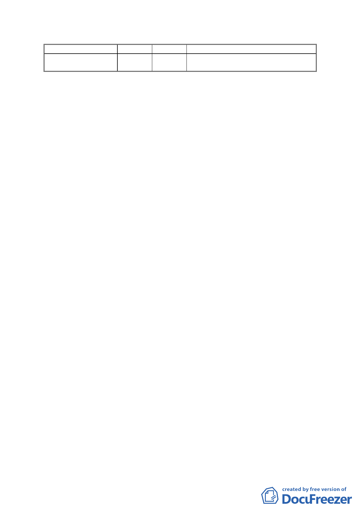

土地使用分區
第 3 種住宅區(特)
建蔽率 容積率
備註
45%
200%
1.蘆洲里工業區(重劃 B 區部分土地)
2.維持原開發強度
2.使用項目：
（1）第 3 種住宅區(特)
第 3 種住宅區(特)之土地及建築物使用應依「臺北市土
地使用分區管制規則」第 3 種住宅區之相關規定辦理。
（2）科技工業區
01.本計畫科技工業區 A 區(特)、科技工業區 B 區及科
技工業區 B 區(特)容許之土地使用組別如附件一表
1-1。另原已核准作「第 46 組:施工機料及廢料堆置
或處理」及「第 47 組:容易妨害衛生之設施甲組之
廢棄物處理(廠)」使用者，得繼續原來之使用。
02.其他經本府產業發展局依「臺北市內湖輕工業區輔
導管理辦法」第 4 條第 5 款公告認可之產業。比照
內湖科技園區符合次核心產業項目，亦得允許使
用，相關回饋條件由本府另訂之。
（3）其他：
01.依本計畫及其他規定得增加容積者，其增加容積之
總和不得超過基準容積之 50%(不含都市更新獎勵)。
02.本計畫公共設施用地符合「都市計畫公共設施用地
多目標使用辦法」規定者，得依實際需要作多目標
使用。
03.本地區不適用「臺北市建築物增設室內公用停車場
空間鼓勵要 點」。
（4）本計畫未規定事項，悉依「臺北市土地使用分區管制
規則」暨相關法令辦理。
（五）事業及財務計畫
本計畫區將採市地重劃開發方式，開發經費與期程規定如下:
- 10 -